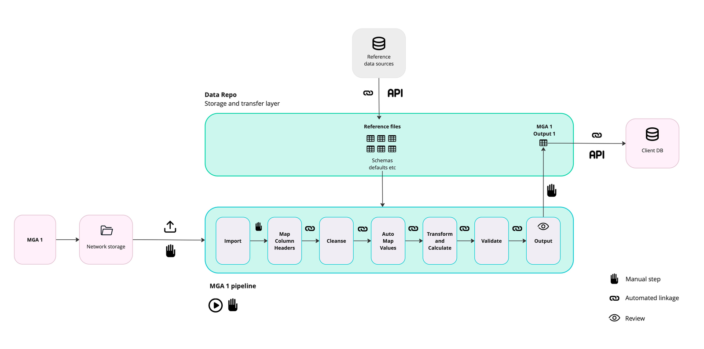
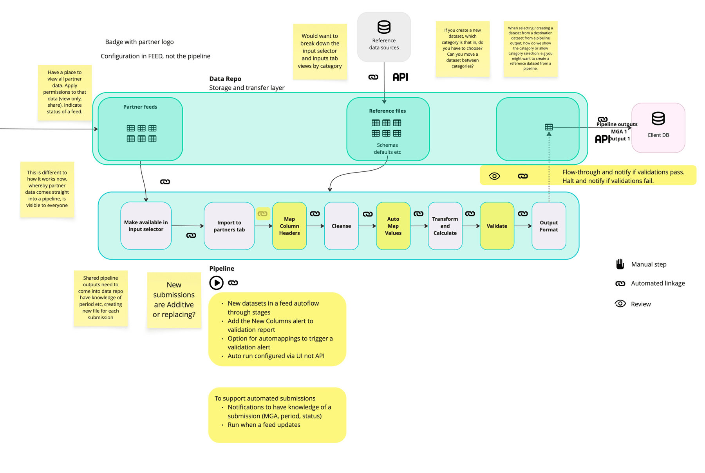
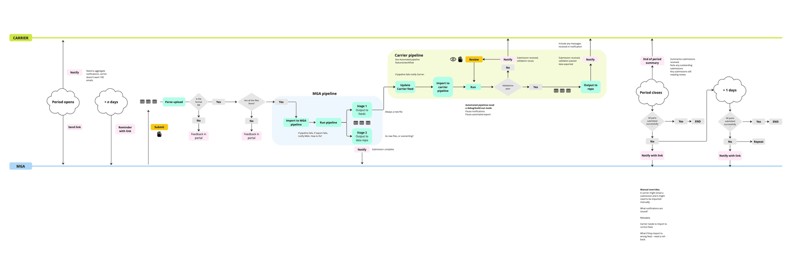
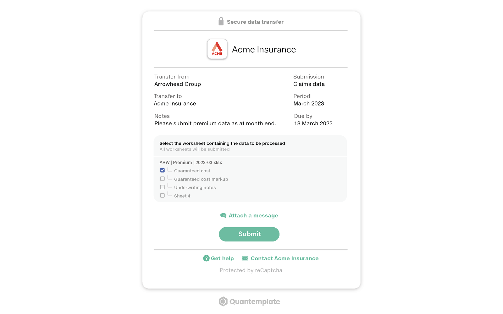
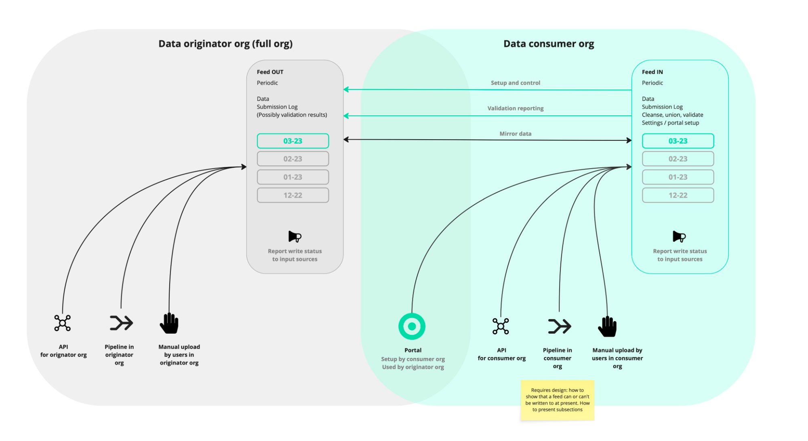
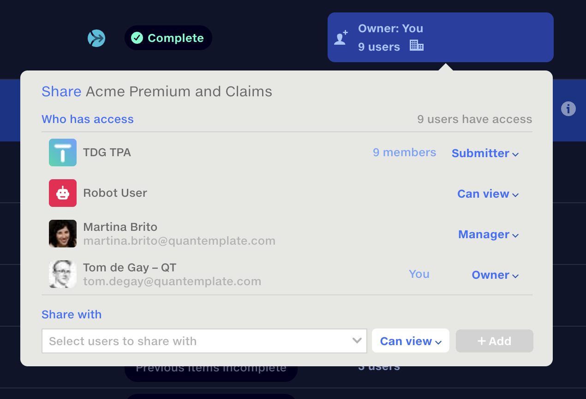

Connecting organisations through data
Infrastructure to automate data exchange, laying the foundation for a connected network.
- Project reframes an upload portal as a cross-company network
- Automates an entire manual workflow, with Feeds set up in under one minute
- Adapts to any shape of data, across files, formats and organisations
- Spans submissions, scheduling, org creation, authentication and admin tooling
I led the design of Feeds, a new Quantemplate workspace for securely requesting, receiving, processing and distributing data between organisations.
By mapping the complete workflow, I reframed an initial upload-portal concept as a persistent system, spanning submissions, automation, permissions and operational oversight. Feeds accommodates complex insurance data exchanges while creating the foundation for a broader connected-data strategy.
Feeds are now entering operational use, exchanging millions of rows and automating routine submission administration.
We’d automated the data processing, but not the process
Insurance companies depend on regular submissions from brokers, managing general agents, third-party administrators and other partners. Our data transformation pipelines did a good job of mapping and harmonising this data, but the parts outside Quantemplate were process bottlenecks.
Email was manual and difficult to audit, while FTP and API integrations were unwieldy. Moreover, keeping track of what was in or overdue every month was a significant timesink.
Even on the happy path, we identified five manual steps to request data and another five to bring it into and out of Quantemplate. Across an average of 150 trading partners, repeated monthly, that amounted to 18,000 manual steps a year.


Modelling the whole workflow
I mapped every touchpoint from the initial request through submission, processing, validation, correction and onward distribution. For each stage we considered the unhappy paths and dead ends: late or incomplete submissions, incorrect files, resubmissions and validation failures.
The map identified every manual step that could be automated, every notification that needed to be sent and every point where human judgement was still required. It became the basis for the submission lifecycle, schedules, statuses, reminders, version history and pipeline triggers.

From Data Drop to Data Network
My initial concept, Data Drop, was a lightweight portal with an unauthenticated, one-time upload link. It would have been a quick win, but mapping its workflow revealed that it would move the email problem further down the chain: links buried in inboxes, no persistent activity record and resubmissions still needing coordination.

I proposed Feeds instead: a whole new area in the product with authenticated users, separate organisations and persistent relationships between partners. This was a larger product increment, but one that addressed the whole workflow, making persistent connections between organisations and opening a path to a broader network strategy.

Flexibility for complex submissions
When we spoke with users and looked at their existing Quantemplate workflows, we could see that a submission was rarely uniform: Premium and Claims might arrive as separate tabs, files, or from different organisations, each needing different pipeline logic.
I introduced subsections to represent these distinct streams within one submission. Feed owners define subsections, and submitters assign uploads to the appropriate one. Using the wayfinding principle of progressive disclosure, the interface walks them through the process, step-by-step.
When Premium and Claims came from different parties, a pipeline could wait until both were complete, with the interface showing what had arrived and what it was still waiting for.
Roles for humans and robots alike
I modelled permission levels around the way our clients divided responsibility. Owners and managers needed to configure Feeds, connect with partners and oversee the process. Submitters only needed access when it was time to upload data, while read-only users needed visibility to use Feeds data in pipelines.
Looking at our permissions model, I realised that we needed a way to run automations without a user present, and have those runs tracked in the history. I proposed the ‘Robot User’ as a pragmatic solution, which users understood without much introduction. When the Robot User has access to a Feed, they can take the data from it, run a pipeline they have access to and output it to a dataset they’ve been given write permission on.

Trusted setup in under a minute
Initiating a partner connection required just their contact’s email. We used the domain to find their organisation or begin creating it. I researched and proposed a logo.dev integration to populate organisation names and logos automatically, reducing setup effort and making requests more recognisable. Admins on each side approve the connection, with all events tracked in a new admin panel.
Admins can also create reusable schedules to centrally manage request frequency. Research revealed that feeds often shared a cadence but followed different contract dates. I made start and end dates properties of a Feed, rather than a schedule, allowing requests to stop at contract end without affecting other feeds using the same schedule.
All that’s required to set up a new Feed is to add subsections, search for a partner and connect an existing schedule. In under one minute you can be requesting data from your trading partners.
The full picture, at a glance
Both parties retain an immutable, versioned record of submitted data. Suppliers can correct and resubmit files without overwriting the original, preserving evidence for future disputes. User avatars and organisation domains identify the people and companies behind submissions, building trust.
I redesigned the Feed repository as a management dashboard, showing which Feeds are complete, waiting for data or overdue; this real-time view of inventory replaces manual tracking in spreadsheets. Configurable reminders chase outstanding submissions automatically.
Visible connections between Feeds and pipelines help managers understand what each submission will trigger and what the automation is still waiting for.
Connecting the whole data chain
Feeds support incoming data, outgoing distribution and onward sharing. An insurer can distribute data to reinsurers, while a broker can receive and pass on the original submission. Each organisation can connect its own processing pipelines while retaining a shared, auditable source record. This uniquely allows us to surface the full data Chain of Custody.
The Feeds lay the architectural groundwork for the big vision: automated data flows across the industry.
A foundation for networked data
Feeds have been running production data for approximately 18 months, processing recurring monthly submissions and 3.4 million rows to date. For the client running it, this removes nearly all of the manual steps identified in the original workflow mapping, for true ‘straight-through processing’. The one step that remains, the initial upload, is performed directly by the data supplier.
Bringing further partners onto Feeds is an ongoing project: in-app guidance and comprehensive tutorials have driven initial uptake, and upcoming features to share validation reports and suggest corrections should make the value of switching more visible.
More strategically, Feeds expanded Quantemplate from a product for automating processes within an organisation, towards infrastructure connecting them. This opens the door to Network Intelligence, where data mappings, transformations and corrections are crowdsourced.